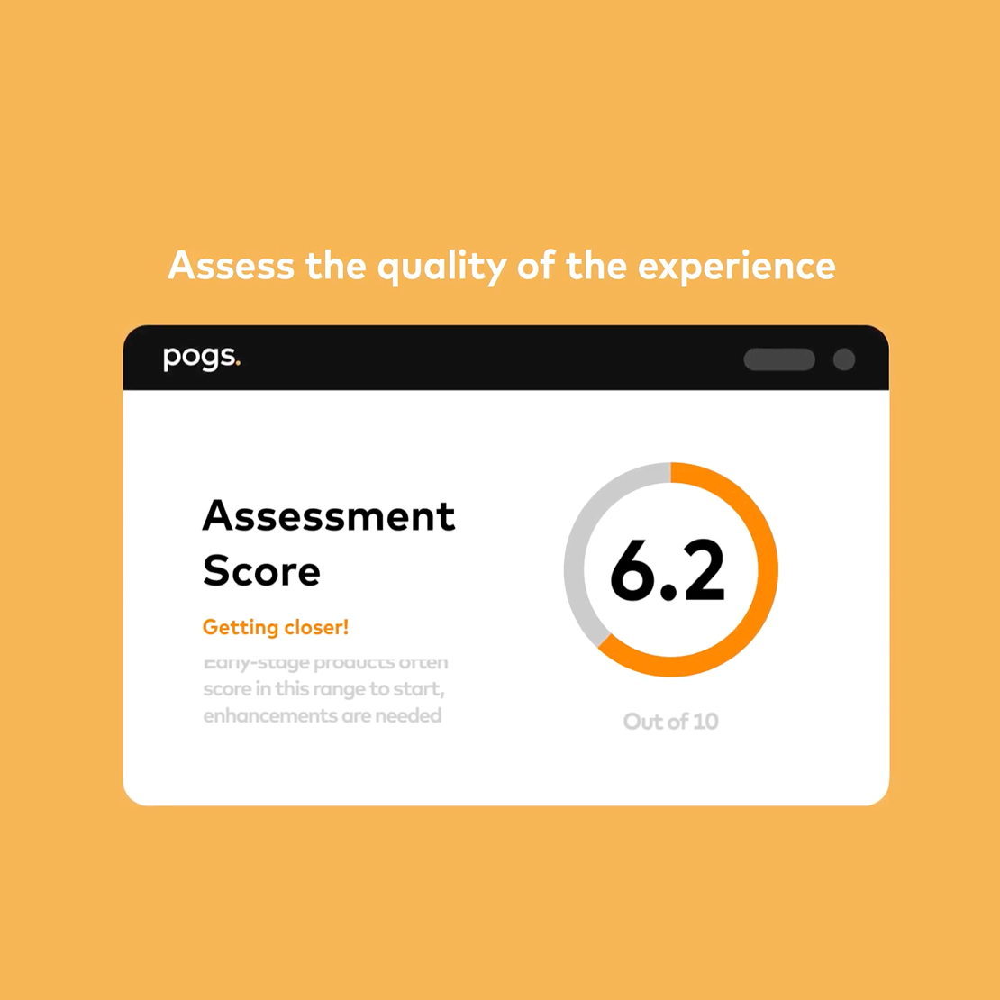

In 2024, POGS transitioned from a recommended design guideline into a formal Craig Vosburg-level mandate. Every market-facing product at Mastercard is now measured against the POGS scorecard, which directly influences leadership bonus calculations.
The primary business objective of POGS is a 20% reduction in Total Time to Implementation (TTI). To support this, I led the evolution of the POGS digital platform, transforming it into a high-scale, self-service hub. This hub enables product teams to identify delivery improvements, access case studies, and integrate gold-standard onboarding practices into their product roadmaps.
As the Senior Specialist for Visual Design and Platform Lead, I was responsible for the structural and visual integrity of the POGS ecosystem:
This project required a combination of strategic UX thinking and advanced platform management: